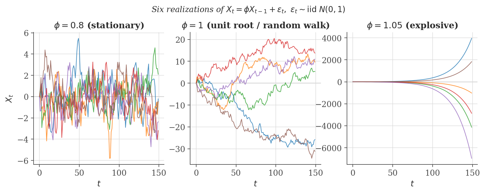
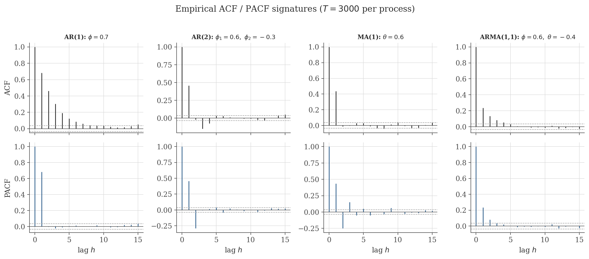
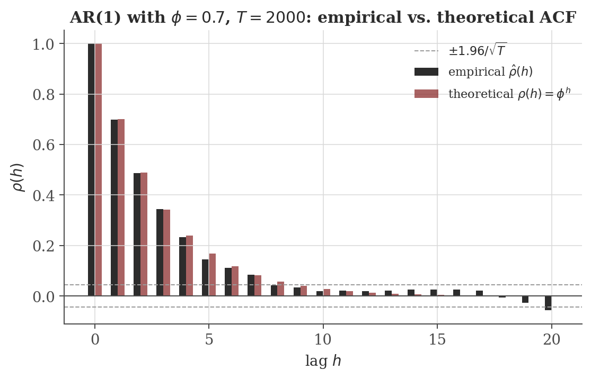
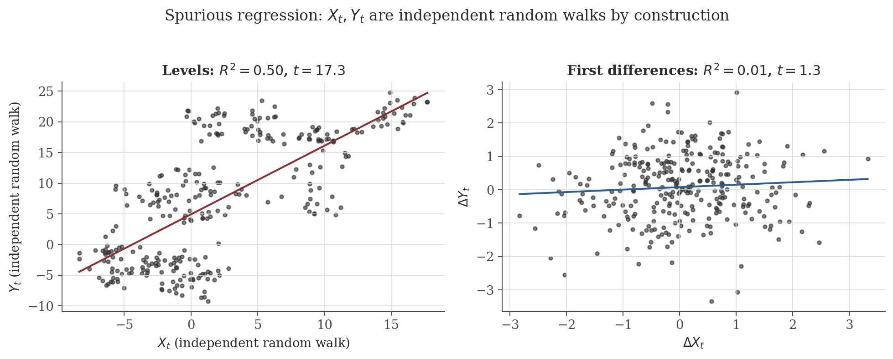
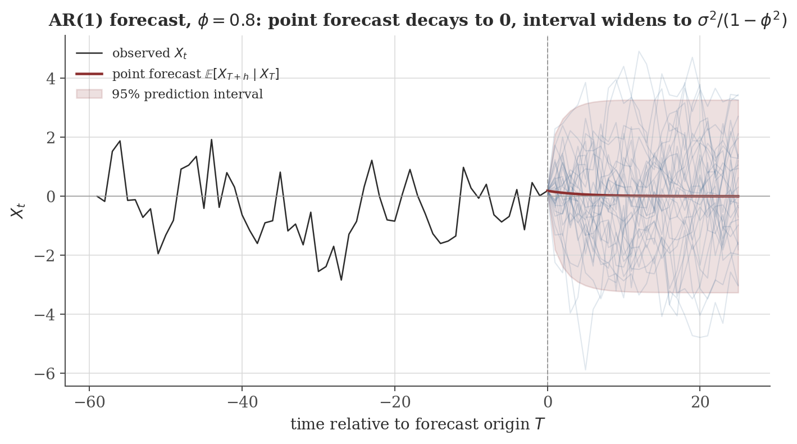

Time Series Analysis
Disclaimer: These are my personal notes compiled for my own reference and learning. They may contain errors, incomplete information, or personal interpretations. While I strive for accuracy, these notes are not peer-reviewed and should not be considered authoritative sources. Please consult official textbooks, research papers, or other reliable sources for academic or professional purposes.
Contents
- Stochastic processes and time series
- Stationarity, white noise, and the autocovariance function
- Ergodicity: why one path can be enough
- The AR(1) process
- General AR($p$) and the Yule–Walker equations
- Moving-average processes and invertibility
- ARMA($p,q$): causality and invertibility together
- Model identification from the ACF and PACF
- Unit roots, integration, and ARIMA
- Spurious regression
- Model selection: AIC and BIC
- Forecasting
- Computation: simulation and estimation
- Common pitfalls
- Connections
- References
1. Stochastic processes and time series
A time series is a single observed path of a stochastic process $\{X_t\}_{t \in \mathbb{Z}}$: a collection of random variables indexed by time and defined on a common probability space $(\Omega, \mathcal{F}, P)$. This is a stronger structure than the cross-sectional setting of ordinary regression. In cross-sectional data, each unit contributes one draw from (conceptually) many independent copies of the same random variable, and the law of large numbers lets us average across units. In time series data, we typically observe a single realization $x_1, x_2, \ldots, x_T$ — one path through time, not many independent paths. Every tool in this note exists to answer one underlying question: under what conditions can a single path stand in for repeated draws? The answer has two parts, developed in Sections 2 and 3: the process's probability law must not drift over time (stationarity), and time-averages computed along the one observed path must converge to the process's true moments (ergodicity).
The rest of the note builds the classical linear time series toolkit — AR, MA, ARMA, and their integrated (ARIMA) extension — from these two foundations, derives rather than states the central results, and uses simulation throughout to make the more subtle distinctions (stationary vs. unit root, causal vs. non-causal, correlation vs. spurious correlation) visually unmistakable rather than purely symbolic.
2. Stationarity, white noise, and the autocovariance function
A process $\{X_t\}$ is strictly stationary if for every $k \in \mathbb{N}$, every set of times $t_1 < t_2 < \cdots < t_k$, and every integer $h$, the joint distribution of $(X_{t_1}, \ldots, X_{t_k})$ equals the joint distribution of $(X_{t_1+h}, \ldots, X_{t_k+h})$.
Strict stationarity says the entire probabilistic description of the process is invariant to shifting the time origin. It is a strong requirement — it constrains every joint distribution, of every order, not just means and covariances. In practice we almost always work with a weaker, second-moment version of the same idea.
A process $\{X_t\}$ is weakly stationary if
- $E[X_t] = \mu$ for all $t$ (constant mean);
- $E[X_t^2] < \infty$ for all $t$ (finite second moments);
- $\mathrm{Cov}(X_t, X_{t+h}) = \gamma(h)$ depends only on the lag $h$, not on $t$.
Strict stationarity together with finite second moments implies weak stationarity.
The converse fails: weak stationarity does not imply strict stationarity. Standard counterexample (Brockwell & Davis, 2016, Ch. 1): let $\{X_t\}$ be independent across $t$, with $X_t \sim N(0,1)$ when $t$ is even and $X_t$ drawn from any other mean-zero, unit-variance distribution (say a rescaled uniform) when $t$ is odd. Independence across $t$ makes $\gamma(h) = 0$ for all $h \neq 0$ and $\gamma(0) = 1$, so the process is weakly stationary. But the marginal distribution of $X_t$ itself depends on the parity of $t$, so it is not strictly stationary. One important special case where the two notions coincide:
If $\{X_t\}$ is a Gaussian process (every finite collection of $X_t$'s is jointly normal), then weak stationarity implies strict stationarity.
This is why Gaussian ARMA models — the setting for essentially everything below — can be studied through means and covariances alone without loss of generality.
A process $\{\varepsilon_t\}$ is white noise, written $\varepsilon_t \sim \mathrm{WN}(0, \sigma^2)$, if $E[\varepsilon_t] = 0$, $\mathrm{Var}(\varepsilon_t) = \sigma^2 < \infty$ for all $t$, and $\mathrm{Cov}(\varepsilon_t, \varepsilon_s) = 0$ for $t \neq s$.
Note precisely what this does and does not assume: white noise is uncorrelated across time, not necessarily independent across time, and not necessarily identically distributed. Every derivation in Sections 4–8 (autocovariances, Yule–Walker equations, causality, invertibility) uses only the uncorrelatedness in the definition. Results that need more — consistency of estimators via a law of large numbers, the exact finite-sample or asymptotic distribution of $\hat\phi$, ergodicity — need the stronger assumption that $\{\varepsilon_t\}$ is i.i.d. or Gaussian. Conflating "white noise" with "i.i.d. noise" is flagged again in the pitfalls at the end of this note, because it is easy to smuggle in the stronger assumption without noticing.
For a weakly stationary process with autocovariance $\gamma(h) = \mathrm{Cov}(X_t, X_{t+h})$:
- $\gamma(0) = \mathrm{Var}(X_t) \geq 0$;
- $|\gamma(h)| \leq \gamma(0)$ for all $h$;
- $\gamma(h) = \gamma(-h)$ (the ACF is even);
- $\gamma$ is positive semi-definite: for any $n$, any times $t_1,\ldots,t_n$, and any reals $a_1,\ldots,a_n$, $\ \sum_{i=1}^n\sum_{j=1}^n a_i a_j \gamma(t_i - t_j) \geq 0$.
Property (4) is not a technicality: it is exactly the condition (a form of Bochner's theorem) that characterizes which candidate functions $\gamma$ can arise as the autocovariance of some stationary process at all. The autocorrelation function is the normalized version, $\rho(h) = \gamma(h)/\gamma(0)$, so $\rho(0)=1$ and $|\rho(h)| \le 1$.
3. Ergodicity: why one path can be enough
Stationarity alone does not guarantee that the sample mean computed along a single observed path, $\bar X_T = \frac{1}{T}\sum_{t=1}^T X_t$, converges to the population mean $\mu = E[X_t]$. A minimal counterexample: let $Z$ be a single random draw from $N(0,1)$, and set $X_t = Z$ for every $t$. This process is (trivially) strictly stationary — every finite-dimensional distribution is just the constant vector $(Z,\ldots,Z)$ shifted nowhere — yet $\bar X_T = Z$ for every $T$, which does not converge to $E[X_t] = 0$ unless $Z$ happens to equal $0$. The process never "explores" the rest of its distribution along a single path.
Ergodicity is the additional condition that rules this out: informally, that time averages along almost every path converge to the corresponding ensemble (expectation) average. The precise statement is the Birkhoff ergodic theorem, which is outside the scope of this note; see Hamilton (1994, Ch. 7) or Brockwell & Davis (2016, Ch. 5) for the full statement and proof. What matters practically is a sufficient condition that is easy to check: a stationary Gaussian process is ergodic if $\sum_{h=-\infty}^\infty |\gamma(h)| < \infty$, i.e. if its autocovariances are absolutely summable. Every causal, invertible ARMA process constructed in Sections 4–7 below satisfies this (its autocovariances decay geometrically), so ergodicity is available whenever it is needed — in particular, it is the formal justification for estimating $\gamma(h)$ and $\phi$ from a single observed path in Section 13.
4. The AR(1) process
The first-order autoregression is defined by the recursion
The recursion alone does not pin down a unique process — it must be paired with an initial condition or a stationarity requirement. Whether a stationary solution exists at all, and what it looks like, depends entirely on $\phi$. The figure below simulates six independent realizations of this recursion for three values of $\phi$, holding the driving noise distribution fixed, and makes the qualitative difference impossible to miss before any algebra is done.

Substituting the recursion into itself $n$ times gives
If $|\phi| < 1$, the recursion admits a unique weakly stationary solution defined for all $t \in \mathbb{Z}$:
This infinite sum — an $\mathrm{MA}(\infty)$ representation of the AR(1) — is the formal justification for the intuition that $X_t$ is "a weighted history of past shocks, with exponentially decaying weights." From it, $E[X_t]=0$, and
For the autocovariance at lag $h \geq 1$, it is cleaner to use the recursion directly rather than the infinite sum. Multiplying $X_t = \phi X_{t-1} + \varepsilon_t$ by $X_{t-h}$ and taking expectations,
where the covariance term vanishes because, under the causal solution above, $X_{t-h}$ depends only on $\varepsilon_{t-h}, \varepsilon_{t-h-1}, \ldots$, all of which are uncorrelated with $\varepsilon_t$ for $h \geq 1$. This first-order recursion in $h$ solves to
So $\phi$ is simultaneously the AR coefficient and the lag-one autocorrelation, and the entire ACF decays geometrically at rate $\phi$ — the mathematical content behind "persistence."
At $\phi = 1$ the recursion becomes $X_t = X_{t-1} + \varepsilon_t$, i.e. $X_t = X_0 + \sum_{s=1}^t \varepsilon_s$ — a random walk. Directly, $\mathrm{Var}(X_t) = t\sigma^2$, which grows without bound and depends on $t$: the process is not weakly stationary, and no stationary solution to the recursion exists at all in this case (the geometric series argument above breaks down exactly at $|\phi|=1$). This is the case shown in the middle panel of the figure above.
When $|\phi|>1$, the forward causal sum $\sum_{j\ge0}\phi^j\varepsilon_{t-j}$ diverges, matching the third panel above. A mathematically careful reader may object: doesn't a stationary solution always exist, by solving the recursion backward instead, i.e. $X_t = -\sum_{j=1}^\infty \phi^{-j}\varepsilon_{t+j}$? This sum does converge in mean square (now $|\phi^{-1}|<1$ drives convergence) and is indeed stationary — but it expresses $X_t$ in terms of future shocks $\varepsilon_{t+1}, \varepsilon_{t+2},\ldots$, not past ones. Such a solution is non-causal: it cannot be simulated forward in time or used for forecasting, since it requires knowing the future to construct the present. For this reason, "the" AR(1) process is conventionally taken to mean the causal solution, which exists only for $|\phi|<1$.
5. General AR($p$) and the Yule–Walker equations
Write the backshift operator $B$ by $BX_t = X_{t-1}$, so $B^k X_t = X_{t-k}$. The order-$p$ autoregression is
The AR($p$) recursion admits a unique stationary, causal solution if and only if every root of $\Phi(z) = 0$ lies strictly outside the unit circle: $|z| > 1$ for every root $z \in \mathbb{C}$.
The full proof (Brockwell & Davis, 2016, Thm. 3.1.1) generalizes the mean-square summability argument used for AR(1) to a companion-matrix representation of the recursion, whose eigenvalues are exactly the reciprocals of the roots of $\Phi$; stationarity requires those eigenvalues to lie inside the unit circle, i.e. the roots of $\Phi$ to lie outside it. (This is precisely the same eigenvalue-location condition that governs stability of the linear recursion $\mathbf v_{t} = A\mathbf v_{t-1}$ in the eigenvalues and eigenvectors note, Section 10.2, applied to the AR($p$) written in companion form.) As a consistency check, for $p=1$: $\Phi(z) = 1-\phi z$ has its single root at $z = 1/\phi$, and $|1/\phi| > 1 \iff |\phi| < 1$ — exactly the AR(1) condition derived above.
For a causal, stationary AR($p$) process, the autocovariances satisfy
Writing the first $p$ equations ($h=1,\ldots,p$) in matrix form, $\boldsymbol\gamma_p = \Gamma_p \boldsymbol\phi$, where $\Gamma_p$ is the $p\times p$ Toeplitz matrix with $(i,j)$ entry $\gamma(i-j)$, gives a linear system relating the autocovariances to the AR coefficients. This is what makes the Yule–Walker equations directly useful for estimation (Section 13): replace $\gamma$ with the sample autocovariance $\hat\gamma$, and solve the resulting linear system for $\hat{\boldsymbol\phi}$.
The partial autocorrelation at lag $h$, $\phi_{hh}$, is the coefficient on $X_{t-h}$ in the best linear predictor of $X_t$ from $X_{t-1},\ldots,X_{t-h}$ — equivalently, the correlation between $X_t$ and $X_{t-h}$ after linearly removing the effect of the intermediate observations $X_{t-1},\ldots,X_{t-h+1}$.
For a causal AR($p$) process, $\phi_{hh} = 0$ for every $h > p$.
This is the population-level statement behind the practical rule "PACF cuts off after lag $p$ for an AR($p$)," used for model identification in Section 8. The recursive algorithm that computes all the $\phi_{hh}$ from the ACF in practice (Durbin–Levinson recursion) is not re-derived here; see Brockwell & Davis (2016, §3.4) or Shumway & Stoffer (2017, §3.4).
6. Moving-average processes and invertibility
The order-$q$ moving average is
Unlike an AR process, an MA($q$) process is a finite linear combination of white-noise terms for any values of $\theta_1,\ldots,\theta_q$, so no stability condition is needed for the process itself to exist and be stationary — mean $0$, and $\mathrm{Cov}(X_t,X_{t+h})$ is a finite sum that manifestly does not depend on $t$. What invertibility governs is something different, worked out below.
For MA(1), $X_t = \varepsilon_t + \theta\varepsilon_{t-1}$, direct expansion gives
so $\rho(1) = \dfrac{\theta}{1+\theta^2}$ and $\rho(h)=0$ for $h\ge2$: the ACF cuts off sharply after lag $1$. The same expansion argument for general $q$ gives $\gamma(h)=0$ for all $h>q$ — the ACF of an MA($q$) always cuts off after lag $q$, the mirror image of the AR PACF cutoff above.
Notice that $\rho(1)$ is unchanged if $\theta$ is replaced by $1/\theta$: $\dfrac{1/\theta}{1+1/\theta^2} = \dfrac{\theta}{\theta^2+1}$. So the MA(1) processes with parameters $\theta$ and $1/\theta$ have identical autocovariance functions and are second-moment indistinguishable, even though they are different processes driven by differently-scaled noise. Something extra is needed to pick out a unique, canonical representative.
That something is invertibility: requiring that $\varepsilon_t$ can be recovered from present and past values of $X_t$ alone, $\varepsilon_t = \Theta(B)^{-1}X_t$. Formally inverting $\Theta(B) = 1+\theta B$ as a power series, $\Theta(B)^{-1} = \sum_{j\ge0}(-\theta)^j B^j$, which converges (in the same mean-square sense as Section 4) iff $|\theta|<1$. Of the pair $\{\theta, 1/\theta\}$ with identical second moments, exactly one has $|\theta|<1$ (unless $|\theta|=1$, the boundary case revisited in the pitfalls section). This is the MA analogue of the AR causality condition, and it generalizes the same way:
The MA($q$) process is invertible — i.e. $\varepsilon_t$ can be written as a convergent (mean-square) linear combination of $X_t, X_{t-1}, \ldots$ — if and only if every root of $\Theta(z)=0$ lies strictly outside the unit circle.
7. ARMA($p,q$): causality and invertibility together
Combining both components,
with $\Phi$ and $\Theta$ as defined above. Two conditions, each already derived, now apply simultaneously and for distinct reasons:
- Causality (roots of $\Phi$ outside the unit circle) guarantees $X_t$ has a convergent $\mathrm{MA}(\infty)$ representation in past and present shocks — the process can be simulated forward and is physically realizable without appeal to the future.
- Invertibility (roots of $\Theta$ outside the unit circle) guarantees $\varepsilon_t$ has a convergent $\mathrm{AR}(\infty)$ representation in past and present $X_t$'s — the innovations can be recovered from data, which is what likelihood-based estimation and multi-step forecasting (Section 12) both rely on.
One further, easily-overlooked requirement: $\Phi$ and $\Theta$ must share no common root. If they did, the corresponding factor would cancel from both sides of $\Phi(B)X_t=\Theta(B)\varepsilon_t$, and the model would really be a lower-order ARMA process dressed up with redundant parameters — an identifiability failure, not a genuinely higher-order model. Software that fits ARMA models by maximum likelihood typically produces a warning (or numerically unstable estimates) precisely when the fitted $\hat\Phi$ and $\hat\Theta$ nearly share a root, which is the practical symptom of this cancellation.
8. Model identification from the ACF and PACF
Sections 4–7 derived, rather than merely asserted, the following signature pattern:
| Process | ACF | PACF |
|---|---|---|
| AR($p$) | tails off (geometric decay, or damped sinusoid if $\Phi$ has complex roots) | cuts off after lag $p$ |
| MA($q$) | cuts off after lag $q$ | tails off |
| ARMA($p,q$), $p,q\ge1$ | tails off | tails off |
The figure below simulates one long realization of each of the four canonical cases and plots the empirical ACF and PACF for each, so the abstract "tails off / cuts off" language in the table can be checked against actual estimated correlograms rather than taken on faith.

Also verify, directly against the earlier AR(1) derivation: the theoretical ACF $\rho(h)=\phi^h$ from Section 4 is not just an algebraic claim — it is what a long simulated path actually produces once sampling noise is accounted for.

9. Unit roots, integration, and ARIMA
A process is integrated of order $d$, written $I(d)$, if $(1-B)^{d}X_t$ is stationary but $(1-B)^{d-1}X_t$ is not. The ARIMA($p,d,q$) model applies an ARMA($p,q$) structure to the $d$-th difference:
The random walk from Section 4 is the canonical $I(1)$ example: $(1-B)X_t = \varepsilon_t$ is white noise — trivially a stationary ARMA(0,0) process — while $X_t$ itself is not stationary, matching the definition exactly.
Whether a series needs differencing is a hypothesis to test, not something to eyeball from a slowly-decaying sample ACF (see the pitfalls section). The standard test regresses $\Delta X_t$ on $X_{t-1}$ (plus, typically, lagged differences and a deterministic trend),
and tests $H_0$ with the Dickey–Fuller (or augmented Dickey–Fuller) statistic. Deriving its limiting distribution is beyond the scope of this note — the key fact worth stating precisely, because it is exactly what makes unit-root testing a distinct subject rather than routine regression, is that the test statistic does not have the usual $t$-distribution even asymptotically: under $H_0$, $X_{t-1}$ is itself non-stationary, so the standard regression asymptotics fail and a different (Dickey–Fuller) limiting distribution applies. See Dickey & Fuller (1979) for the original derivation, and Hamilton (1994, Ch. 17) for a full treatment.
10. Spurious regression
The reason non-stationarity is not a minor technicality: regressing one $I(1)$ series on another completely unrelated $I(1)$ series tends to produce a high $R^2$ and a large, apparently significant $t$-statistic, purely as an artifact of both series accumulating unrelated stochastic trends — not because of any real relationship. This was demonstrated by simulation by Granger & Newbold (1974) and given rigorous asymptotic foundations by Phillips (1986), who showed that in this setting the OLS $t$-statistic diverges as $T\to\infty$ rather than converging to a standard limiting distribution, so the usual "large $t$ means significant" heuristic fails outright.

Differencing to stationarity is not the only fix, and it is sometimes the wrong one: if two $I(1)$ series share a genuine long-run equilibrium relationship, a linear combination of their levels can itself be stationary even though neither series is — the two series are then said to be cointegrated. In that case differencing both series and modeling them separately discards exactly the long-run relationship of interest; the appropriate tool is an error-correction model. Both cointegration testing (Engle & Granger, 1987) and error-correction modeling are outside the scope of this note; they are flagged here as the natural next topic rather than glossed over.
11. Model selection: AIC and BIC
Having fixed a family of ARMA($p,q$) candidates, order selection is typically done by minimizing a penalized log-likelihood over $(p,q)$:
where $\hat L$ is the maximized likelihood and $k = p+q+1$ counts the AR, MA, and noise-variance parameters. The two penalties are not interchangeable notational variants of the same idea — they answer different questions and were derived from different first principles. AIC (Akaike, 1974) is (twice) an asymptotically unbiased estimator of the expected Kullback–Leibler divergence between the fitted model and the unknown true data-generating process, i.e. it targets predictive accuracy. BIC (Schwarz, 1978) arises from a Laplace approximation to the Bayesian marginal likelihood under a fixed-dimension parameter prior, i.e. it targets identifying the true model.
If a finite-order ARMA model is truly correct and lies among the candidates, BIC selects it with probability $\to 1$ as $T\to\infty$ (model-selection consistency) because its penalty $k\ln T$ grows without bound relative to AIC's fixed penalty $2k$. AIC is not consistent in this sense — it has a positive asymptotic probability of selecting an over-parameterized model — but it is asymptotically efficient: even when no finite-order model is exactly correct (the more realistic case for most real data), AIC's selected model minimizes mean-squared one-step prediction error asymptotically, a property BIC does not share. Neither criterion dominates the other; they optimize different objectives.
In practice, minimizing AIC or BIC over a grid of $(p,q)$ is necessary but not sufficient: it should always be followed by a residual diagnostic (see the pitfalls section) to confirm the chosen model has actually removed the serial correlation it was fit to capture.
12. Forecasting
Let $\mathcal F_T = \sigma(X_T, X_{T-1}, \ldots)$ be the information available at time $T$. Among all (measurable, finite-variance) functions $g$ of $\mathcal F_T$, $\hat X_{T+h} = E[X_{T+h} \mid \mathcal F_T]$ minimizes $E\big[(X_{T+h} - g)^2\big]$.
Applied to the causal AR(1), forward-substituting $h$ steps from the forecast origin $T$,
Every $\varepsilon_{T+h-j}$ in the sum lies strictly in the future relative to $T$ and is therefore uncorrelated with (in the Gaussian case, independent of, hence mean-zero conditional on) $\mathcal F_T$, so the conditional-expectation forecast and its error variance are
Both expressions have the sensible limiting behavior one should check as a matter of habit: as $h\to\infty$, $\hat X_{T+h}\to 0$ (the unconditional mean) and the forecast variance $\to \sigma^2/(1-\phi^2) = \gamma(0)$ (the unconditional variance) — far enough ahead, conditioning on today provides no information at all, exactly as it should.

13. Computation: simulation and estimation
The figures above were produced by a self-contained script, time-series-analysis/generate_figures.py, in the same directory as this note — it can be re-run directly (python3 generate_figures.py, requiring numpy, matplotlib, scipy, and statsmodels) to regenerate every figure from scratch, and is the appropriate place to look for the exact simulation parameters behind each one.
The snippet below is a smaller, standalone illustration of the estimation step referenced throughout Section 5: simulate an AR(1) with a known $\phi$, then recover $\phi$ two ways — via the Yule–Walker equation $\hat\phi = \hat\rho(1)$ (the $p=1$ case of Section 5's linear system), and via ordinary least squares regression of $X_t$ on $X_{t-1}$, which coincide for AR(1) up to a $T/(T-1)$ finite-sample factor in the denominator sums.
import numpy as np
from statsmodels.tsa.stattools import acf
rng = np.random.default_rng(7)
phi_true, sigma2_true, T = 0.65, 1.0, 500
eps = rng.normal(0, np.sqrt(sigma2_true), T)
x = np.zeros(T)
for t in range(1, T):
x[t] = phi_true * x[t - 1] + eps[t]
# Yule-Walker: phi_hat = rho_hat(1), the p=1 case of Section 5's linear system
phi_yw = acf(x, nlags=1, fft=True)[1]
# OLS: regress x_t on x_{t-1}
y, xlag = x[1:], x[:-1]
phi_ols = np.sum(xlag * y) / np.sum(xlag**2)
resid = y - phi_ols * xlag
sigma2_hat = np.var(resid, ddof=1)
print(f"True phi = {phi_true}")
print(f"Yule-Walker estimate: phi_hat = {phi_yw:.4f}")
print(f"OLS estimate: phi_hat = {phi_ols:.4f}")
print(f"Residual variance estimate: sigma^2_hat = {sigma2_hat:.4f} (true = {sigma2_true})")
Actual output from running this script:
True phi = 0.65
Yule-Walker estimate: phi_hat = 0.6246
OLS estimate: phi_hat = 0.6568
Residual variance estimate: sigma^2_hat = 0.8819 (true = 1.0)Both estimates land close to the true $\phi=0.65$ at $T=500$, consistent with the ergodicity-backed consistency argument of Section 3; the two estimates are not identical because Yule–Walker and OLS use slightly different normalizations of the same sums in finite samples, a gap that vanishes as $T\to\infty$.
14. Common pitfalls
"Stationary" in applied work almost always means weakly stationary. The two coincide for Gaussian processes (Section 2) but not in general — a process can have constant mean and lag-dependent-only covariances while its marginal distribution still drifts over time (e.g. changing skewness or kurtosis), which weak stationarity is simply blind to.
Every derivation of an ACF, Yule–Walker equation, or causality/invertibility condition in this note used only uncorrelatedness of $\{\varepsilon_t\}$. Consistency of the estimators in Section 13, and any claim about ergodicity (Section 3), silently needs the stronger i.i.d. (or at least martingale-difference) assumption. Reading "white noise" as "independent noise" everywhere is usually harmless in practice but is not automatic, and matters for GARCH-type models (mentioned in the connections below) built specifically because financial residuals are uncorrelated but not independent — their squares are autocorrelated even when the levels are not.
A random walk's sample ACF decays extremely slowly and stays close to 1 for many lags — visually similar to "very strong AR persistence" with $\phi$ close to but below 1. The two require different treatment (differencing vs. not) and cannot be reliably distinguished by eye; use a unit-root test (Section 9), not a visual read of the correlogram.
Differencing an already-stationary series does not merely do "no harm" — it actively introduces spurious MA structure. If $X_t$ is white noise, $Y_t = X_t - X_{t-1}$ has $\gamma_Y(0)=2\sigma^2$, $\gamma_Y(1)=-\sigma^2$ (by direct expansion, the same technique as Section 6), so $\rho_Y(1) = -1/2$ exactly — a strong, entirely artifactual, negative lag-1 correlation. In MA(1) terms this is $\theta=-1$, exactly on the invertibility boundary derived in Section 6 — over-differencing manufactures a unit MA root, which is numerically difficult to estimate and does not correspond to any real structure in the data. Difference until (not past the point) a unit-root test stops rejecting stationarity.
Minimizing AIC or BIC only compares models within the search grid actually tried; it says nothing about whether the best of those candidates is adequate in absolute terms. Always follow order selection with a residual autocorrelation check (e.g. the Ljung–Box test) — a low-AIC model can still leave significant serial correlation in its residuals if, for instance, a seasonal component was never included in the search space to begin with.
The prediction interval derived in Section 12, and shown in the forecast figure, assumes $\phi$ and $\sigma^2$ are known exactly. In practice they are estimated (Section 13) with their own sampling uncertainty, which propagates into the forecast and widens the true interval beyond the "known-parameters" formula used here — a caveat about the figure's own construction, not just a generic warning.
15. Connections
- Regression methods. Estimating $\phi$ in Section 13 by OLS regression of $X_t$ on $X_{t-1}$ is consistent as $T\to\infty$ but, unlike the classical Gauss–Markov setting, is biased in finite samples (the Hurwicz bias, downward for $\phi>0$): the regressor $X_{t-1}$ is correlated with the noise entering later observations through the recursion, violating strict exogeneity even though weak exogeneity (needed for consistency) still holds.
- Causal inference. Serial correlation in panel or repeated time series data invalidates naive OLS standard errors, motivating cluster-robust or Newey–West-type corrections; separately, the parallel-trends assumption behind difference-in-differences is itself, implicitly, a claim about the (non-)stationarity of the counterfactual trend that a treated unit would have followed.
- Probabilistic models. State-space models and the Kalman filter generalize ARMA to allow time-varying or latent-state dynamics; a causal, invertible ARMA process is exactly the special case of a linear-Gaussian state-space model with time-invariant coefficients. Hidden Markov models play an analogous generalizing role when the latent state is discrete rather than continuous.
- Convergence. The ergodic theorem invoked in Section 3 is the time series analogue of the strong law of large numbers for i.i.d. sequences; mixing conditions (not covered here) play a role analogous to the rate/uniform-integrability conditions that strengthen basic convergence results in that note.
- Eigenvalues and eigenvectors. The AR($p$) causality condition (Section 5) is an instance of the general stability condition for a linear recursion $\mathbf v_t = A\mathbf v_{t-1}$ written in companion-matrix form: stationary iff every eigenvalue of $A$ lies strictly inside the unit circle.
- Volatility clustering (not covered in this note). An ARMA model's white-noise residuals can be uncorrelated yet have autocorrelated squares — exactly the "white noise but not i.i.d." distinction flagged in the pitfalls above. ARCH/GARCH models extend the AR/MA machinery of this note to the conditional variance itself, and are the natural next topic for anyone working with financial return data.
16. References
- Brockwell, P. J., & Davis, R. A. (2016). Introduction to Time Series and Forecasting (3rd ed.). Springer.
- Hamilton, J. D. (1994). Time Series Analysis. Princeton University Press.
- Box, G. E. P., Jenkins, G. M., Reinsel, G. C., & Ljung, G. M. (2015). Time Series Analysis: Forecasting and Control (5th ed.). Wiley.
- Shumway, R. H., & Stoffer, D. S. (2017). Time Series Analysis and Its Applications: With R Examples (4th ed.). Springer.
- Dickey, D. A., & Fuller, W. A. (1979). Distribution of the estimators for autoregressive time series with a unit root. Journal of the American Statistical Association, 74(366a), 427–431.
- Granger, C. W. J., & Newbold, P. (1974). Spurious regressions in econometrics. Journal of Econometrics, 2(2), 111–120.
- Phillips, P. C. B. (1986). Understanding spurious regressions in econometrics. Journal of Econometrics, 33(3), 311–340.
- Engle, R. F., & Granger, C. W. J. (1987). Co-integration and error correction: Representation, estimation, and testing. Econometrica, 55(2), 251–276.
- Akaike, H. (1974). A new look at the statistical model identification. IEEE Transactions on Automatic Control, 19(6), 716–723.
- Schwarz, G. (1978). Estimating the dimension of a model. The Annals of Statistics, 6(2), 461–464.